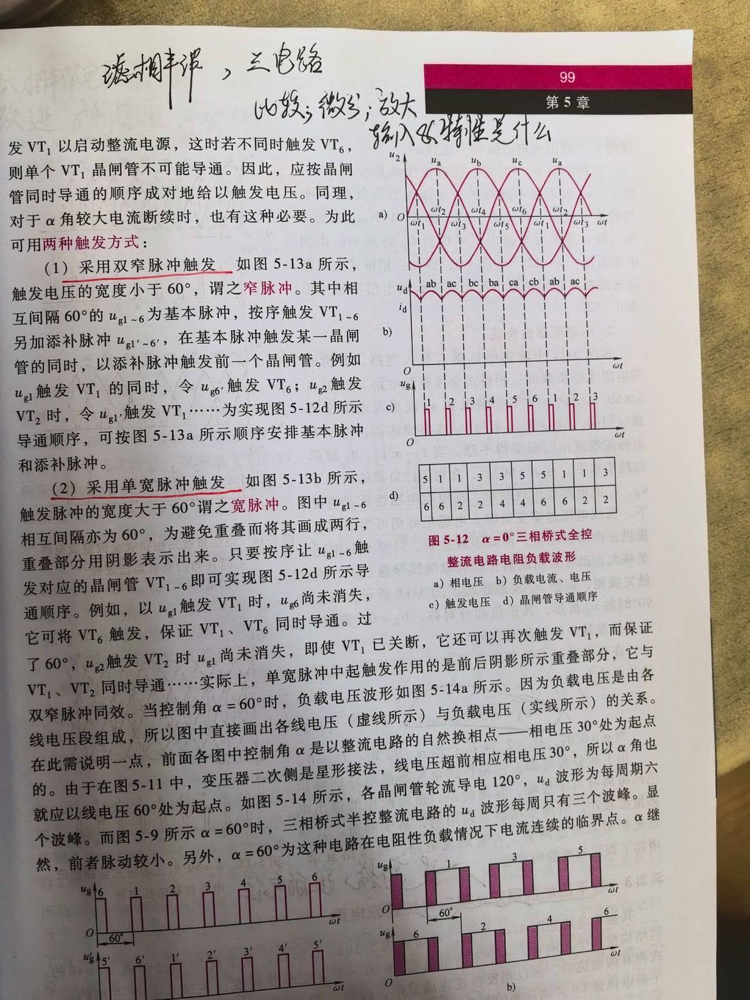

13 手写笔记/课堂实拍/kt-11 教材 p99：双窄脉冲与单宽脉冲触发
kt-11 教材 p99：双窄脉冲与单宽脉冲触发
📷 课堂实拍 · 老师标注为重点（原图见下；文字为转录，公式/接点以图为准）
教材 p99：双窄脉冲与单宽脉冲触发

实拍转录
- 手写批注：移相原理；三电路比较；微分；放大；输入输出特性是什么。
- （1）采用双窄脉冲触发：触发电压的宽度小于 60°，谓之窄脉冲。相互间隔 60° 的 u_g1~6 为基本脉冲，按序触发 VT₁~6，另加添补脉冲 u_g1'~6'；在基本脉冲触发某一晶闸管的同时，以添补脉冲触发前一个晶闸管。
- （2）采用单宽脉冲触发：触发脉冲的宽度大于 60°，谓之宽脉冲。u_g1~6 相互间隔亦为 60°，为避免重叠而将其画成两行，重叠部分用阴影表示出来。只要按序让 u_g1~6 触发对应的晶闸管 VT₁~6 即可实现所需导通顺序。
- 实际中单宽脉冲起触发作用的是前后阴影所示重叠部分，它与双窄脉冲同效。
- 控制角 α 是以整流电路的自然换相点——相电压 30° 处为起点。变压器二次侧是星形接法，线电压超前相电压 30°，所以 α 角也应从线电压 60° 处为起点。
- 各晶闸管轮流导电 120°，u_d 波形为每周期六个波峰；而图 5-9 所示 α=60° 时，三相桥式半控整流电路的 u_d 波形每周只有三个波峰，前者脉动较小。α=60° 为这种电路在电阻性负载情况下电流连续的临界点。
本页重点
- 两种触发方式：双窄脉冲（<60°，基本脉冲＋添补脉冲）与单宽脉冲（>60°，靠前后重叠部分，效果等同）。
- α 的起点是自然换相点（相电压 30° 处）；因二次星形、线电压超前 30°，所以 α 从线电压 60° 处算。
- 全控桥：每管导通 120°，u_d 每周 6 个波峰；半控桥只有 3 个 → 全控桥脉动小。
- α = 60° 是电阻性负载电流连续的临界点。
考点（怎么考）
- 默写双窄脉冲与单宽脉冲的定义（宽度界限 60°）与作用效果。
- α 起算点在哪？为什么从线电压 60° 处算？
- 波峰数对比：全控 6 个 / 半控 3 个；α=60° 临界点。
对应讲义页
关联
- 概念卡：触发电路 · 晶闸管弧焊整流器 · 三相半控桥式整流电路
- 讲义：00 第5章 晶闸管整流器 导航 · 总览：课堂实拍总览
- 索引：01 弧焊电源 MOC · 课件标红总表